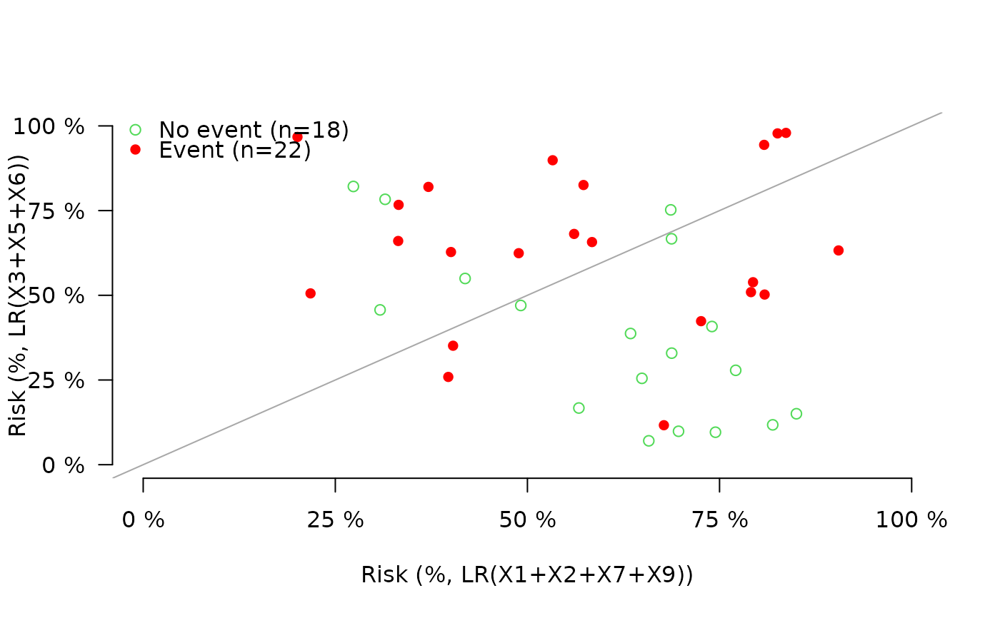
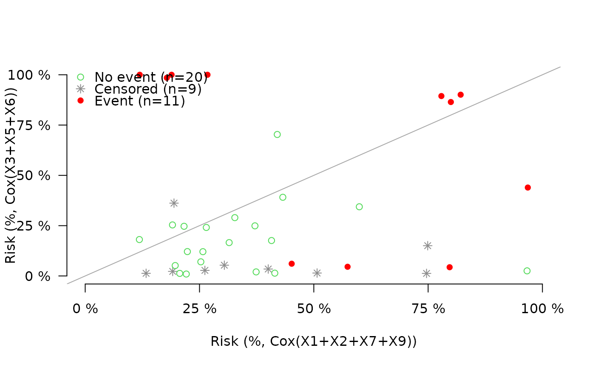

plot predicted risks
Arguments
- x
Object obtained with function
Score- models
Choice of two models to plot. The predicted risks of the first (second) are shown along the x-axis (y-axis).
- times
Time point specifying the prediction horizon.
- xlim
x-axis limits
- ylim
y-axis limits
- xlab
x-axis labels
- ylab
y-axis labels
- col
Colors used according to the outcome. binary outcome (two colors: no event, event), survival outcome (three colors: censored, event, no event) competing risk outcome (4 or more colors: event, competing risk 1, ..., competing risk k, censored, no event)
- pch
Symbols used according to the outcome binary outcome (two symbols: no event, event), survival outcome (three symbols: censored, event, no event) competing risk outcome (4 or more symbols: event, competing risk 1, ..., competing risk k, censored, no event)
- cex
point size
- preclipse
Value between 0 and 1 defining the preclipse area
- preclipse.shade
Logical. If
TRUEshade the area of clinically meaningful change.- ...
Used to control the subroutines: plot, axis, lines, barplot, legend. See
SmartControl.
Examples
library(prodlim)
## uncensored
set.seed(10)
learndat = sampleData(40,outcome="binary")
testdat = sampleData(40,outcome="binary")
lr1 = glm(Y~X1+X2+X7+X9,data=learndat,family="binomial")
lr2 = glm(Y~X3+X5+X6,data=learndat,family="binomial")
xb=Score(list("LR(X1+X2+X7+X9)"=lr1,"LR(X3+X5+X6)"=lr2),formula=Y~1,
data=testdat,summary="risks",null.model=0L)
plotRisk(xb)

## survival
library(survival)
set.seed(10)
learndat = sampleData(40,outcome="survival")
testdat = sampleData(40,outcome="survival")
cox1 = coxph(Surv(time,event)~X1+X2+X7+X9,data=learndat,x=TRUE)
cox2 = coxph(Surv(time,event)~X3+X5+X6,data=learndat,x=TRUE)
xs=Score(list("Cox(X1+X2+X7+X9)"=cox1,"Cox(X3+X5+X6)"=cox2),formula=Surv(time,event)~1,
data=testdat,summary="risks",null.model=0L,times=c(3,5,6))
plotRisk(xs,times=5)

## competing risk
if (FALSE) {
library(prodlim)
library(survival)
set.seed(8)
learndat = sampleData(80,outcome="competing.risk")
testdat = sampleData(140,outcome="competing.risk")
m1 = FGR(Hist(time,event)~X2+X7+X9,data=learndat,cause=1)
m2 = CSC(Hist(time,event)~X2+X7+X9,data=learndat,cause=1)
xcr=Score(list("FGR"=m1,"CSC"=m2),formula=Hist(time,event)~1,
data=testdat,summary="risks",null.model=0L,times=c(3,5))
plotRisk(xcr,times=1)
}